Send Apple Card transactions to Toshl Finance
WalletFeed sends your Apple Card, Apple Cash and Savings transactions from your iPhone to Toshl Finance. You make a personal token in Toshl, then paste it into WalletFeed.
Before you start
- An iPhone with iOS 26 or a newer version. WalletFeed is available only in the US.
- WalletFeed, with access to the Wallet accounts that you want to send.
- WalletFeed Pro, because destinations are part of it. WalletFeed Pro is a subscription with a 1-week free trial, or a one-time Lifetime purchase.
- Toshl Finance, with the email and password that you use to log in. You can make personal tokens on the Toshl Free plan.
- A computer with a web browser, to add an account in Toshl in Step 1.
Step 1: Add an Apple Card account in Toshl
WalletFeed adds all entries to one Toshl account. If the name of an account includes "Apple", WalletFeed selects that account for you. If you have an account for your card in Toshl, go to Step 2.
-
On your computer, log in to the Toshl web app.
-
Click All accounts.
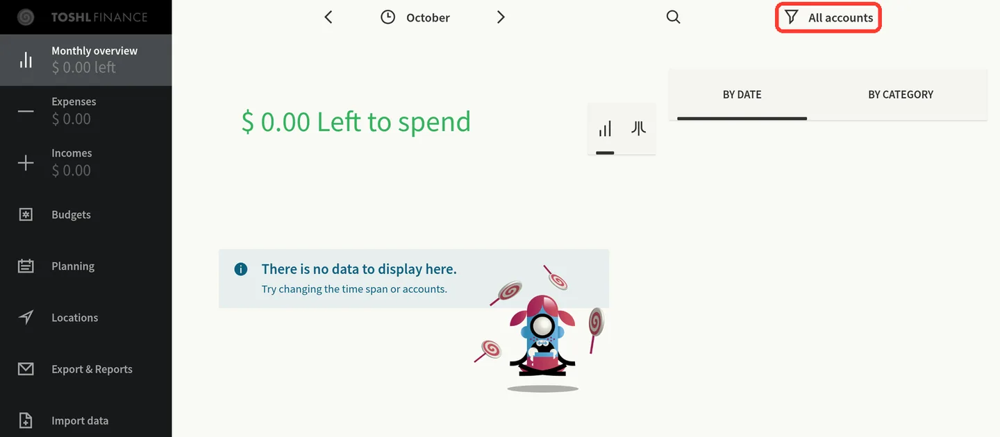
-
In the Accounts panel, click ADD ACCOUNT.
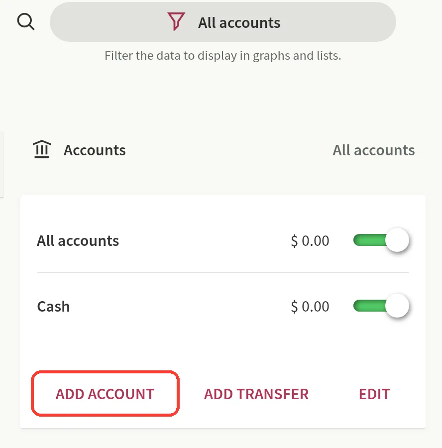
If Toshl shows Upgrade to Toshl Pro or Medici, click X, then go to Step 2. The Toshl Free plan has a limit of 2 accounts.
-
Click General financial account.
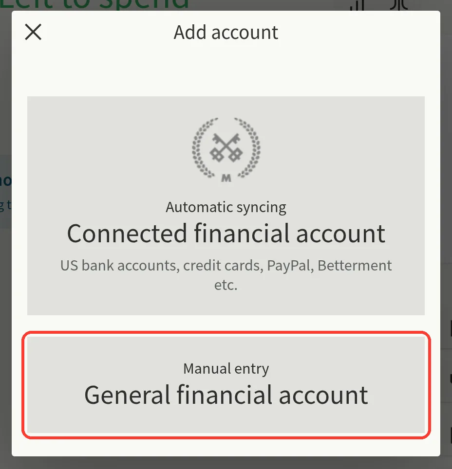
Do not click Connected financial account. It is Toshl bank sync, which is only on the Medici plan.
-
In Title, type
Apple Card.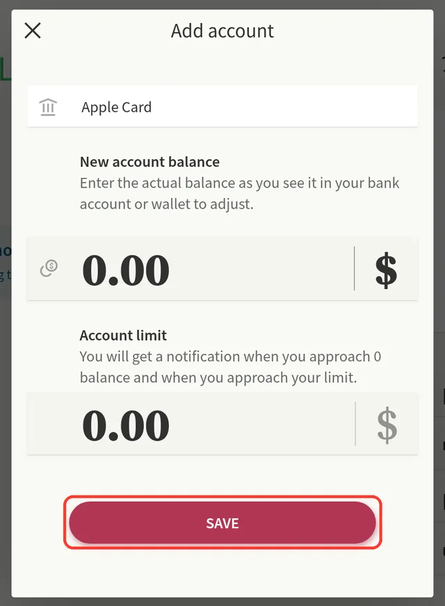
-
Click SAVE. You can keep 0.00 in New account balance and Account limit.
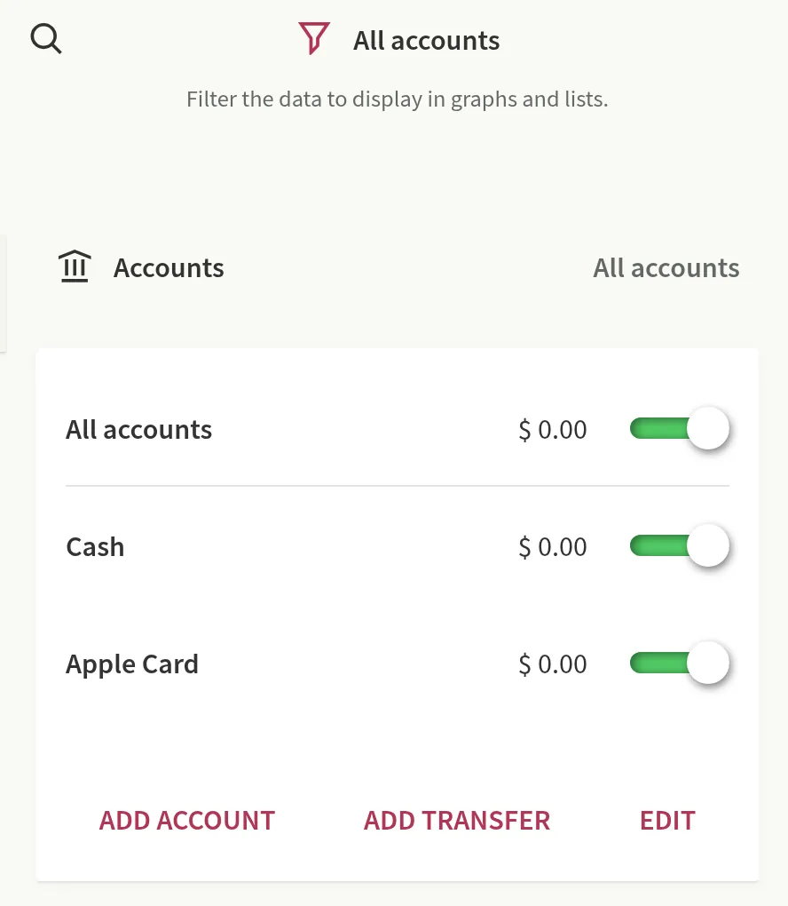
Step 2: Open the Toshl Finance form in WalletFeed
-
On your iPhone, open WalletFeed.
-
In Destinations, tap +.

-
Under Budgeting, tap Toshl Finance.

If you do not have WalletFeed Pro, WalletFeed shows WalletFeed Pro first. After you get WalletFeed Pro, WalletFeed shows the Toshl Finance form.
Step 3: Make a personal token in Toshl
-
In the Toshl Finance form, tap Open Apps.
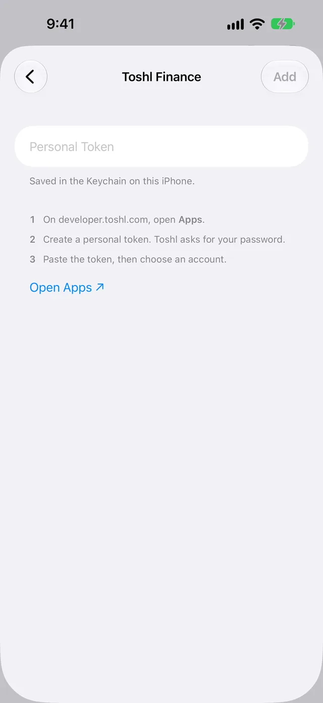
The Toshl Apps page opens in your web browser.
-
If the page shows Please login to proceed., do these steps:
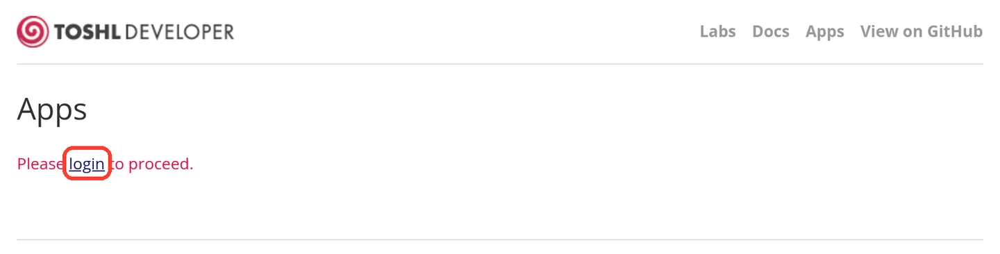
- Tap login.
- Type your Toshl email and password.
- Tap Log in. Toshl then opens its web app, not the Apps page.
- In WalletFeed, tap Open Apps again.
-
In Description, type
WalletFeed.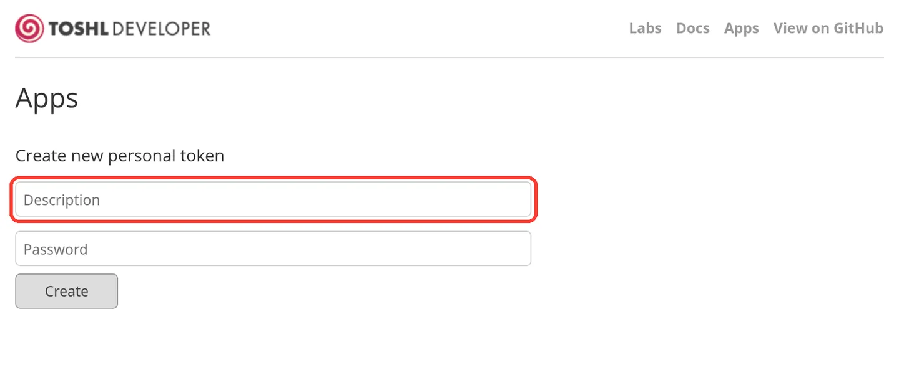
-
In Password, type your Toshl password.
-
Tap Create.
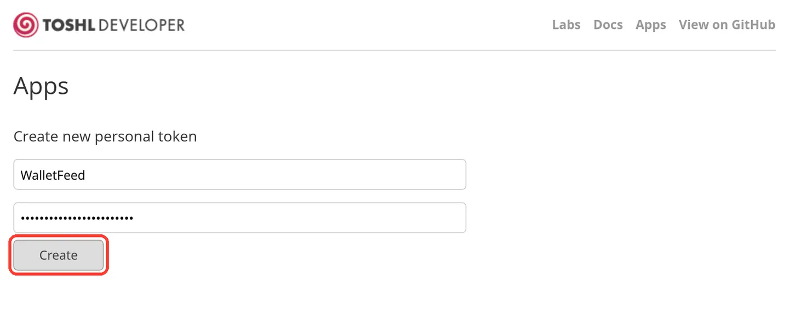
-
Copy all of the token in the gray box under Tokens list.
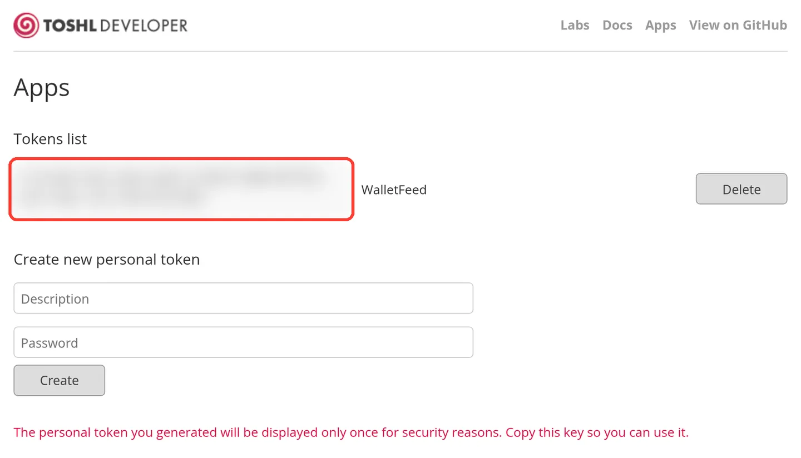
Toshl shows all of the token only one time. The token has two lines, and the page has no copy button. The text WalletFeed in the same row is the description, not the token.
Step 4: Add Toshl Finance in WalletFeed
-
Go back to WalletFeed.
-
In Personal Token, paste the token.
WalletFeed does a check of the token, then shows Account with your Toshl accounts. The token stays in the Keychain on your iPhone.
-
Make sure that Account shows the Toshl account for your card, such as Apple Card.
To use a different account, tap Account, then select the account.
-
Tap Add.
WalletFeed shows Send Transactions to Toshl Finance? The message tells you that Toshl Finance receives the date, merchant, amount, currency and category of transactions. It also gives the Wallet accounts and the start date.
-
Tap Send.
WalletFeed starts to send your transactions. Destinations shows the new destination, with a name such as Toshl · Apple Card. If you tap Cancel, WalletFeed does not add the destination.
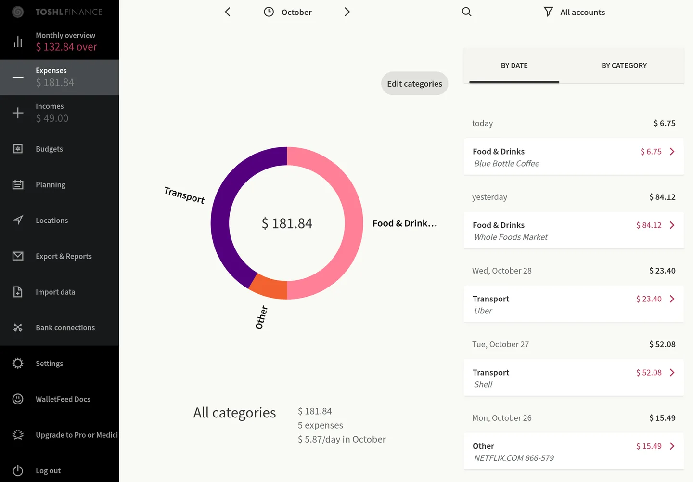
Data that Toshl Finance receives
Each transaction becomes one entry in the Toshl account that you selected. Your transactions go from your iPhone directly to Toshl. WalletFeed has no account and no WalletFeed servers. After Toshl receives your transactions, the Toshl terms are applicable to them.
| In Wallet | In Toshl Finance |
|---|---|
| A purchase | An expense |
| A refund or other credit | An income |
| Amount | Amount. WalletFeed does not send a transaction with an amount of 0, because Toshl does not accept it. |
| Currency | Currency |
| Purchase date | Date, as the day in your time zone |
| Merchant, or the description if there is no merchant | Description, with a maximum of 255 characters |
| Category | Category, from the table that follows |
| Transaction ID | A WalletFeed ID that Toshl keeps but does not show |
Toshl does not receive the name of the Wallet account. All entries go into the one Toshl account.
For each new entry, WalletFeed compares your Toshl categories with the names in the second column, in sequence. It uses the first name that agrees with a Toshl category. Capital letters do not change the result. If no name agrees, WalletFeed uses Other.
| WalletFeed category | Toshl category names, in sequence | Result with the standard English categories in Toshl |
|---|---|---|
| Groceries | Groceries, Food & Drinks, Food | Food & Drinks |
| Dining | Restaurants, Dining, Food & Drinks, Food | Food & Drinks |
| Transport | Transport, Transportation | Transport |
| Fuel | Fuel, Car, Transport | Transport |
| Entertainment | Entertainment, Leisure | Leisure |
| Travel | Travel, Holidays | Other |
| Shopping | Shopping, Clothing | Other |
| Subscriptions | Subscriptions, Bills & Fees, Bills | Other |
| Utilities | Utilities, Bills & Fees, Bills, Home | Other |
| Health | Health, Healthcare, Health & Beauty | Other |
| Services | Services | Other |
| Cash & Transfers | Cash, Transfers | Other |
| Other | Other | Other |
| A refund or other credit | Refunds, Other (income categories) | Other |
WalletFeed sets the category only when it adds an entry. If you change the category, tags, location or reminders of an entry in Toshl, WalletFeed keeps your changes.
Sync times and changes
While WalletFeed is open, Toshl receives changes in seconds. When WalletFeed is closed, iOS starts WalletFeed in approximately 1 hour or less after a change in Wallet. For this, Background Sync must be on in Settings › Sync.
Toshl has no pending status. In Toshl, a pending purchase is a usual expense. When the purchase posts, WalletFeed changes the amount, date and description of the same entry.
If a pending purchase does not post, for example after a decline, WalletFeed removes its entry from Toshl. WalletFeed does this only for entries from the last 90 days.
A refund is an income in Toshl, in the category Refunds or Other.
Send previous transactions
A new destination also receives previous transactions, from the start date in Settings › Sync › Initial History. Initial History is All until you change it.
To send a different period, use Send History:
-
In Destinations, tap the Toshl Finance destination.
-
Tap Send History.
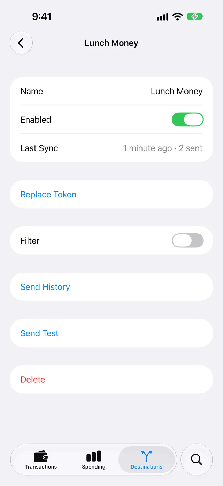
-
Select 30 Days, 90 Days, 1 Year or All.
WalletFeed sends the history in small parts, at a speed that Toshl accepts. Destinations shows the progress. To stop, tap Send History › Stop Sending.
If you send a period again, WalletFeed finds the entries that it sent before. It changes them if it is necessary, and it does not add a second entry.
Change or stop the destination
In Destinations, tap the Toshl Finance destination. Then use these controls:
- To stop the destination for a time, set Enabled to off.
- To send only some transactions, set Filter to on. Refer to Choose what a destination receives.
- To use a new token, tap Replace Token, paste the token, then tap Replace.
- To remove the destination, tap Delete, then tap Delete again.
WalletFeed accepts a new token only if it can see the same Toshl account. The entries that WalletFeed sent before stay in Toshl, and WalletFeed does not add them again.
After you tap Delete, the transactions that WalletFeed sent stay in Toshl. To remove the token from Toshl too, do these steps:
-
On your computer, open the Toshl Apps page.
-
In Tokens list, click Delete in the row of the WalletFeed token.
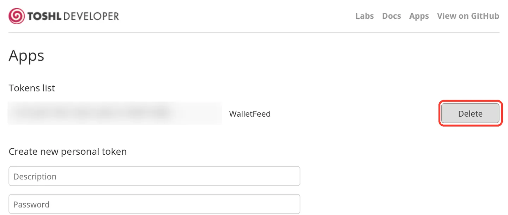
Toshl removes the token and does not show a confirmation message.
If something goes wrong
If WalletFeed shows "Token rejected" or "Authentication failed"
Toshl does not accept the token, because you copied only part of it, or you removed it in Toshl.
-
Make a new personal token, as in Step 3.
-
Copy all of the token in the gray box.
-
In WalletFeed, paste the token in Personal Token.
For a destination that you added before, use Replace Token.
If the token in Toshl ends with "..."
Toshl shows all of the token only one time, and WalletFeed cannot use the first part that Toshl shows after that.
- Make a new personal token, as in Step 3.
- In Tokens list, tap Delete in the row of the token that ends with "...".
If WalletFeed shows "Create an account in Toshl first."
Toshl has no active account for your login.
- Add an account in Toshl, as in Step 1.
- In WalletFeed, remove the token from Personal Token.
- Paste the token again.
If WalletFeed shows "This token can't see" and the account name
The new token is from a different Toshl login, or the account is not in Toshl now.
- Log in to Toshl with the email that has the account.
- Make a new personal token, as in Step 3.
- In WalletFeed, tap Replace Token and paste the new token.
If Toshl shows "Upgrade to Toshl Pro or Medici"
The Toshl Free plan has a limit of 2 accounts, and the account Cash is one of them.
- Click X.
- In WalletFeed, in Account, select an account that you have in Toshl.
If you do not know your Toshl password
To make a token, you must type your Toshl password. If you log in to Toshl with Apple, Google or Facebook, possibly you have no Toshl password.
- Open the Toshl Log In page.
- Tap Forgot password? and set a password.
If many entries are in Other
The standard Toshl categories do not have names for many WalletFeed categories.
- On the Toshl Expenses page, click Edit categories.
- Add an expense category with a name from the category table, such as
Shopping.
WalletFeed uses the new category for new entries only. To change an entry that is in Toshl now, change its category in Toshl.
If Toshl shows a negative balance
The new account starts at 0.00, and each purchase is an expense. Thus, the balance is less than zero after the first purchase. This is usual for a card account and does not show a sync problem.
If no transactions show in Toshl
-
In WalletFeed, tap the Toshl Finance destination in Destinations.
-
Read Last Sync. If it shows a message, find that message on this page.
-
Tap Send Test.
Toshl receives a test expense of $4.20 with the description WalletFeed. Remove it in Toshl after the test.
-
In Toshl, click the arrows adjacent to the month name to see a different month.
If an entry shows two times in Toshl
Two iPhones that send the same card to Toshl at the same time can each add the entry.
- Keep the Toshl Finance destination on one iPhone only.
- In Toshl, remove the second entry.
If WalletFeed shows "Toshl is limiting requests. Try again later."
Toshl received too many requests in a short time.
- Wait some minutes.
- Try again.
During a sync, WalletFeed stops and continues at the next sync.
Related
Updated October 30, 2026